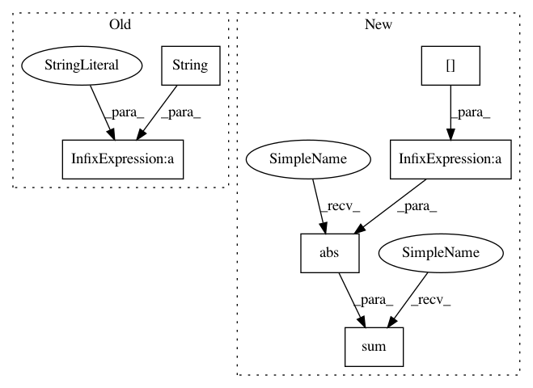

5769051e69929a4a0517b97cd41c8b260c489881,dipy/segment/tests/test_mrf.py,,test_greyscale_iter,#,104
Before Change
plt.figure()
plt.imshow(initial_segmentation[..., 1])
plt.title("initial " + str(i) )
PLN = com.prob_neighborhood(image_gauss, initial_segmentation, beta,
nclasses)
After Change
plt.figure()
plt.imshow(np.abs(final_segmentation[..., 1] - initial_segmentation[..., 1]))
diff = np.abs(final_segmentation[..., 1] - initial_segmentation[..., 1])
print("Difference points")
print(np.sum(diff > 0))
initial_segmentation = final_segmentation.copy()
mu = mu_upd.copy()
In pattern: SUPERPATTERN
Frequency: 3
Non-data size: 6
Instances
Project Name: nipy/dipy
Commit Name: 5769051e69929a4a0517b97cd41c8b260c489881
Time: 2016-08-03
Author: garyfallidis@gmail.com
File Name: dipy/segment/tests/test_mrf.py
Class Name:
Method Name: test_greyscale_iter
Project Name: nipy/dipy
Commit Name: 5769051e69929a4a0517b97cd41c8b260c489881
Time: 2016-08-03
Author: garyfallidis@gmail.com
File Name: dipy/segment/tests/test_mrf.py
Class Name:
Method Name: test_greyscale_iter
Project Name: UFAL-DSG/tgen
Commit Name: ef4b6aebffc902a2f4f8b3232fe2ee7e77b6dd9f
Time: 2015-11-13
Author: odusek@ufal.mff.cuni.cz
File Name: tgen/classif.py
Class Name: TreeClassifier
Method Name: _training_pass
Project Name: UFAL-DSG/tgen
Commit Name: 8ea6f4e142a345881dc45df5269261e1737a946a
Time: 2015-11-13
Author: odusek@ufal.mff.cuni.cz
File Name: tgen/classif.py
Class Name: TreeClassifier
Method Name: _training_pass